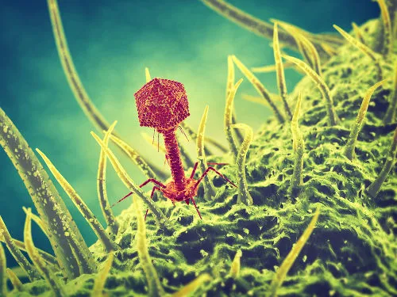
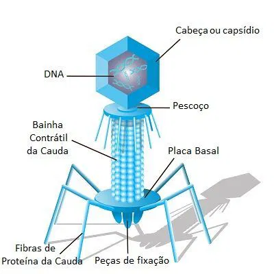

DEFINIÇÃO E ESTRUTURA DOS BACTERIÓFAGOS:
O QUE SÃO BACTERIÓFAGOS?
Os bacteriófagos, também conhecidos como fagos, são vírus capazes de infectar bactérias. Estes vírus não se multiplicam de forma independente, eles necessitam de um hospedeiro. Por este motivo, são normalmente encontrados em maior abundância em locais habitados por seus hospedeiros.
Os bacteriófagos são vírus bacterianos naturais, presentes em diversos locais, como água, solo e ar. Os fagos podem se diferenciar pelos seus ciclos biológicos, sendo assim, são classificados em líticos ou lisogênicos.
Eles são vírus, ou seja não são uma célula, pois segundo a Teoria Celular, os vírus são uma exceção.

Os bacteriófagos são vírus capazes de infectar bactérias
ESTRUTURA BÁSICA: CÁPSIDE, MATERIAL GENÉTICO, CAUSA
Como qualquer vírus, o bacteriófago possui uma estrutura simples:

- Cápside: Uma proteína que envolve e protege o material genético. A cápside pode ter formas diversas, como icosaédrica ou helicoidal.
- Material genético: Pode ser DNA ou RNA, geralmente de cadeia simples ou dupla. Esse material é o que o fago utiliza para se replicar dentro da célula bacteriana.
- Cauda: Estrutura alongada que ajuda na adesão e penetração do fago na célula bacteriana. A cauda possui filamentos que se ligam à superfície da bactéria.
- Pé: Às vezes presente, auxilia na fixação do fago à célula alvo.